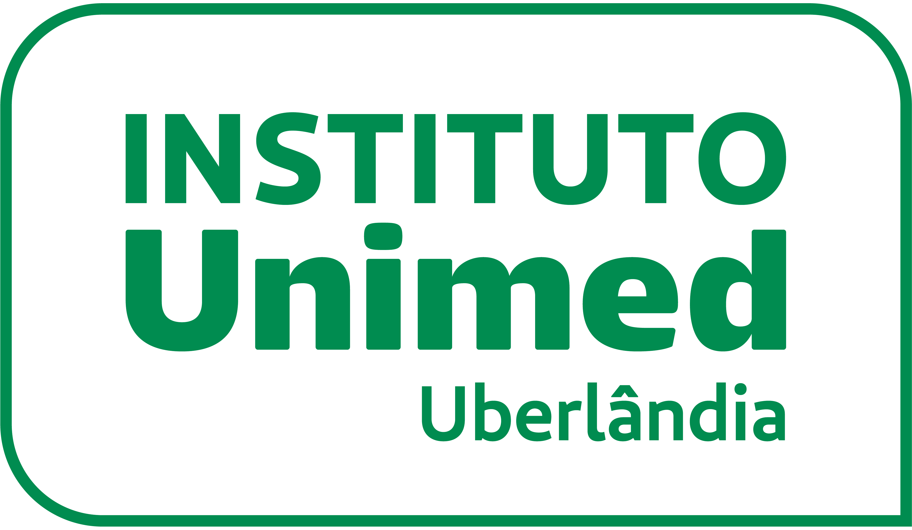
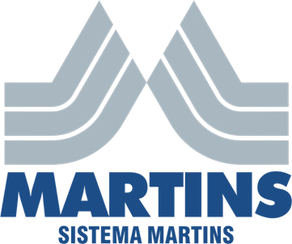
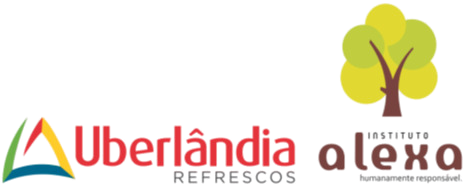

A Lazarus Assessoria e Projetos reúne uma trajetória profissional de mais de 30 anos de atuação no desenvolvimento e acompanhamento de projetos.
Ao longo dessa trajetória, a atuação tem sido dedicada à elaboração, captação de recursos, gestão, execução e prestação de contas de projetos, por meio de leis de incentivo, editais nacionais e internacionais e outros mecanismos de financiamento.
Hoje, a Lazarus reúne essa experiência em uma estrutura empresarial preparada para atender organizações da sociedade civil, empresas, produtores, artistas, municípios e instituições públicas e privadas, oferecendo acompanhamento técnico em todas as etapas dos projetos.
Desenvolvimento e estruturação de projetos para leis de incentivo, editais nacionais e internacionais e outros mecanismos de financiamento.
Planejamento e busca de recursos para projetos, com identificação de potenciais patrocinadores, parceiros e fontes de financiamento.
Acompanhamento técnico, administrativo e financeiro das etapas do projeto, conforme planejamento, orçamento, cronograma e exigências do mecanismo utilizado.
Organização, acompanhamento e elaboração da prestação de contas, com atenção aos documentos, prazos e normas específicas de cada projeto.
Assessoria na elaboração do plano de trabalho, acompanhamento da execução dos recursos e prestação de contas de projetos viabilizados por emendas parlamentares.
Orientação a empresas na seleção e no patrocínio de projetos, especialmente por meio de leis de incentivo fiscal, com acompanhamento do processo e da documentação necessária.
Criação de sites institucionais e páginas para empresas, organizações, projetos e iniciativas, desenvolvidos de acordo com as necessidades de cada cliente.
Ao longo dos anos, projetos assessorados pela Lazarus contaram com o apoio de empresas e instituições de diferentes segmentos, contribuindo para a realização de iniciativas culturais, sociais, esportivas e institucionais.





Ao longo dessa trajetória foram desenvolvidos projetos em diferentes segmentos, incluindo: